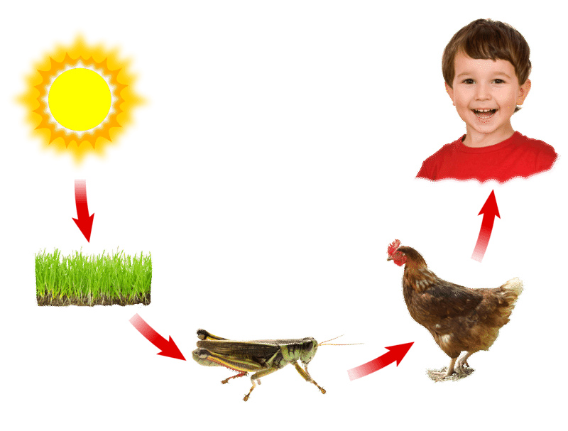
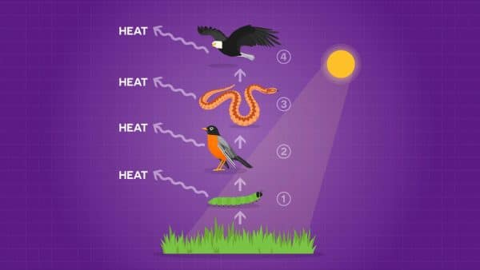
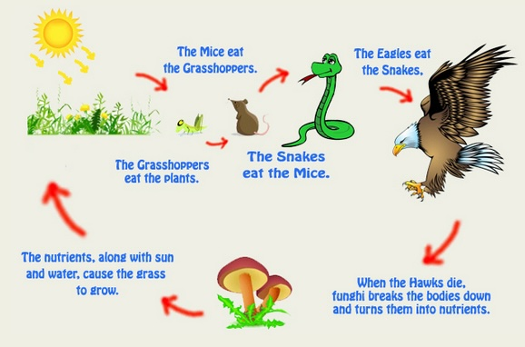
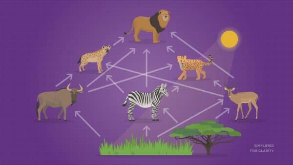
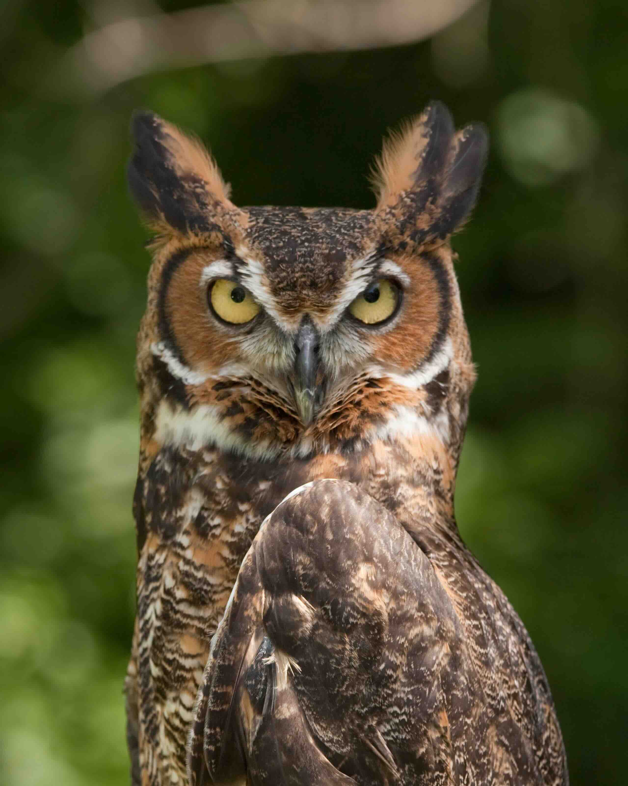
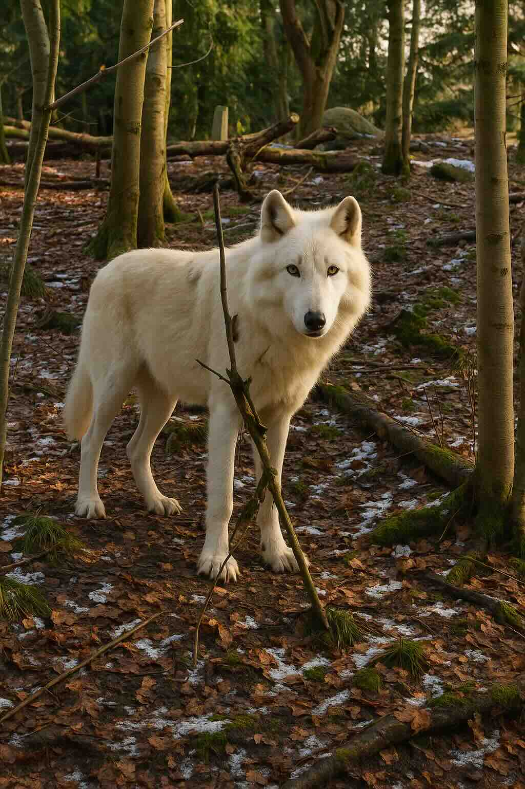
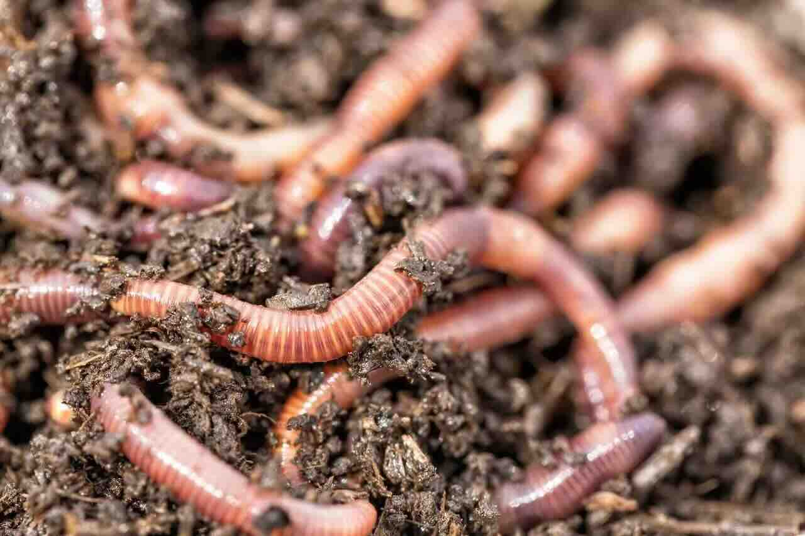
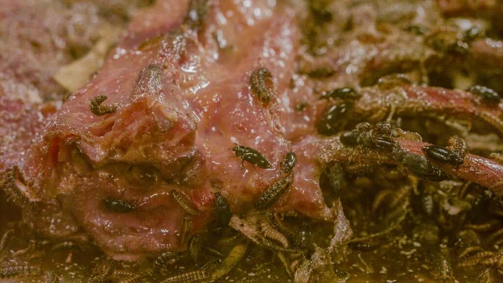
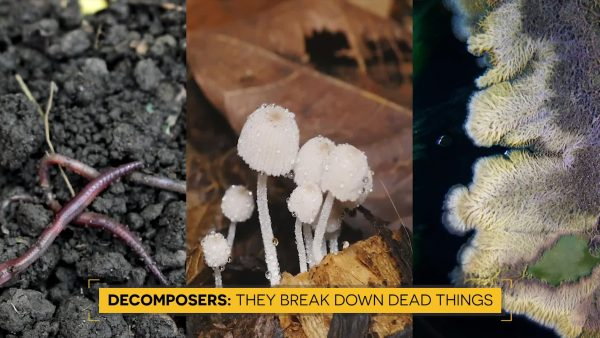

🌿 Food Webs: Nature's Interconnected Networks 🌿
🌞 Where It All Begins: Energy from the Sun
Key Concept: All energy in food can be traced back to the sun! The sun is the ultimate source of energy for almost all life on Earth.
Imagine the sun as a giant power plant in the sky. Every day, it sends enormous amounts of energy to Earth in the form of sunlight. But how do living things use this energy? This is where the amazing process of photosynthesis comes in!
🌱 Energy Flow: From Sun to You!

The incredible journey of energy: from the sun's rays to the food on your plate! This diagram shows how solar energy is captured by plants and transferred through the food chain all the way to humans.
This amazing diagram shows the complete pathway of energy from the sun to your dinner table! Notice how energy starts with the sun, gets captured by plants through photosynthesis, moves to animals that eat plants, and eventually reaches us when we eat both plants and animals.
🌱 Photosynthesis: Nature's Energy Converter
Plants are like tiny solar panels! Through photosynthesis, they capture sunlight and transform it into food (sugar) using carbon dioxide from the air and water from the soil. This process is so important because it converts the sun's energy into a form that all living things can use.

Energy flows in one direction through food chains, from producers to various levels of consumers. Notice how energy decreases at each level!
Sunlight
→
Plants
→
Food Energy
🏭 Producers: The Food Makers
Producers: Living things (almost always plants) that make their own food using sunlight. They are called "producers" because they produce food for themselves and all other living things.
Plants are the superstars of every ecosystem! They're called producers because they literally produce food from sunlight, water, and carbon dioxide. Without producers, there would be no food for any other living thing on Earth.
Why Are Plants So Important?
- They capture energy from the sun and make it available to all other organisms
- They form the base of every food chain and food web
- They provide oxygen as a bonus product of photosynthesis
- They are the foundation that supports all animal life
🦁 Consumers: The Food Eaters
Consumers: Living things that cannot make their own food and must eat other organisms to get energy. They are called "consumers" because they consume (eat) other living things.
Animals are consumers because they can't make their own food like plants do. They must eat other organisms to get the energy and building blocks they need to grow and survive.
Types of Consumers:
- Herbivores: Animals that eat only plants (like rabbits, zebras, and deer)
- Carnivores: Animals that eat other animals (like lions, hawks, and snakes)
- Omnivores: Animals that eat both plants and animals (like bears and humans)
⚡ Energy Transfer: Passing the Power Along
Remember: Energy flows in one direction through food chains and webs - from producers to consumers. Matter, however, cycles and can be reused!
When a herbivore eats a plant, it gets energy from that plant. When a carnivore eats the herbivore, it gets energy from the herbivore. This is how energy moves through ecosystems!
🔥 Energy Loss: Why Food Chains Are Short
Important: Each time energy transfers from one organism to another, some energy is lost as heat. This is why food chains typically have only 4 steps at most!
Your body is actually releasing heat energy right now as you learn! This is because your body burns food to keep warm and power your brain. Since energy is lost at each step, there's not enough energy left to support many levels in a food chain.

A simple food chain showing the flow of energy from plants to herbivores to carnivores. Each arrow represents energy transfer and some energy loss.
Grass
→
Rabbit
→
Fox
→
Eagle
Energy decreases at each level due to heat loss
🔗 Food Chains vs. Food Webs
🔗 Food Chains: Simple but Limited
A food chain shows a simple sequence where one organism eats another in a straight line. For example: Grass → Rabbit → Fox → Eagle
🕸️ Food Webs: Complex but Realistic
Why Food Webs Are Better: Most organisms eat more than one type of food and can be eaten by more than one type of predator. Food webs show ALL these feeding relationships, making them more accurate than simple food chains.

A complex food web showing multiple interconnected feeding relationships. Notice how many arrows connect different organisms - this shows the real complexity of nature!
In real ecosystems, relationships are much more complex. A zebra might be eaten by lions, hyenas, AND cheetahs. A lion might eat zebras, wildebeest, AND buffalo. Food webs show all these interconnected relationships.
Understanding Food Web Arrows
Arrows in food webs show the direction energy flows. An arrow from grass to a zebra means energy flows from the grass to the zebra (the zebra eats the grass).
👑 Apex Predators: Kings of the Food Web
Apex Predator: An animal at the top of the food web that is not eaten by any other animals (except by decomposers when it dies). Examples include sharks, eagles, and lions.

Great Horned Owl: A powerful apex predator with excellent night vision and silent flight
🦅 The Great Horned Owl
These magnificent birds are apex predators that hunt at night. Their silent flight and powerful talons make them incredibly effective hunters of mice, rats, rabbits, and even small mammals.

Wolves are apex predators that play a crucial role in maintaining ecosystem balance
🐺 The Wolf: Nature's Population Controller
Wolves are apex predators that have shaped entire ecosystems. Their hunting keeps deer and elk populations healthy and prevents overgrazing of vegetation.
Why Apex Predators Are Critical
Apex predators are like nature's population controllers. They keep prey populations from getting too large, which prevents overgrazing and maintains ecosystem balance.
🎯 The Yellowstone Wolf Story:
When wolves were removed from Yellowstone National Park, deer populations exploded. Too many deer ate all the young trees and plants, which affected birds, beavers, and even changed river patterns! When wolves were reintroduced, the entire ecosystem began to heal. This shows how important apex predators are for ecosystem health.
🍄 Decomposers: Nature's Recyclers
Decomposers: Organisms (mostly bacteria and fungi) that break down dead plants and animals, returning nutrients to the soil for plants to use again.
Decomposers are the unsung heroes of every ecosystem! Without them, dead plants and animals would pile up everywhere, and nutrients would never get recycled back to the soil.

Earthworms are incredible decomposers that process soil and break down dead plant material
🪱 Earthworms: Soil Engineers
Earthworms can process their own body weight in organic matter every single day! They tunnel through soil, eating dead leaves and plant material, and their waste creates rich, fertile soil.

Multiple types of decomposers working together to break down dead organic matter
🍄 Team Decomposition
Many different organisms work together as decomposers: bacteria, fungi, millipedes, and beetles all help break down dead material into nutrients that plants can use.

The diverse world of decomposers: from tiny bacteria to visible fungi and invertebrates, all playing crucial roles in nutrient cycling
Who Are the Decomposers?
- Bacteria: Microscopic organisms that break down dead material at the cellular level
- Fungi: Including mushrooms and molds that decompose tough organic compounds
- Invertebrates: Earthworms, millipedes, and centipedes that physically break down dead material
- Insects: Beetles, flies, and their larvae that speed up decomposition
🔄 The Nutrient Cycle
Critical Role: Decomposers complete the cycle by breaking down dead organisms and releasing nutrients back into the soil, where plants can use them to grow.
Dead Plant/Animal
→
Decomposers
→
Nutrients in Soil
→
New Plant Growth
🔬 Decomposer Experiment:
Next time you see a fallen log in the forest, look closely! You'll find mushrooms, insects, and evidence of bacterial decay. That log is being slowly transformed into rich soil that will feed new plants. It's like watching nature's recycling system in action!
⚖️ Ecosystem Balance and Stability
Ecosystems are like giant, complex puzzles where every piece matters. When one piece is removed or changed, it affects all the other pieces.
🌍 What Makes an Ecosystem Stable?
- Multiple food sources: When animals have several food options, they're less likely to starve if one food source disappears
- Balanced predator-prey relationships: The right number of predators keeps prey populations healthy
- Efficient decomposers: Proper nutrient recycling keeps the soil fertile
- Diverse species: More species means more stability
💥 Disruptions to Ecosystem Balance
Warning Signs: When ecosystems become unbalanced, we might see:
- Overpopulation of certain species
- Overgrazing of plants
- Species extinctions
- Habitat destruction
🔄 Matter Cycling vs. Energy Flow
Key Difference:
- Energy flows in one direction and is eventually lost as heat
- Matter cycles and can be reused over and over again
Examples of Matter Cycling:
- Carbon: Moves from air to plants to animals and back to air
- Water: Cycles through organisms and the environment
- Nitrogen: Cycles between soil, plants, animals, and decomposers
- Phosphorus: Moves through rocks, soil, plants, and animals
🌟 Real-World Examples and Case Studies
🦅 The Great Horned Owl: A Success Story
Great horned owls are apex predators that eat mice, rats, frogs, snakes, and rabbits. By controlling these populations, they prevent overgrazing and keep ecosystems healthy. Their excellent night vision and silent flight make them incredibly effective hunters.
🐺 The Wolf Reintroduction Story
When wolves were reintroduced to Yellowstone National Park, amazing things happened! Deer populations decreased, allowing plants to recover, which brought back birds and beavers, and even changed river patterns! This is called a "trophic cascade" - when changes at the top of the food web create effects throughout the entire ecosystem.
🪱 Earthworms: Tiny But Mighty
Earthworms are incredible decomposers that process soil and dead plant material, making nutrients available for new plant growth. Just one earthworm can process its own body weight in organic matter every day! They're like living soil factories.
🧪 Understanding Ecosystem Interactions
What Happens When New Species Are Introduced?
When a new species enters an ecosystem, it can dramatically change the balance. The new species might:
- Compete with native species for food
- Become a new predator with no natural controls
- Introduce diseases
- Change habitat structure
Disease Impacts on Ecosystems
When diseases affect plants (the producers), the impacts cascade through the entire food web. Without healthy plants, herbivores suffer, which then affects carnivores, and the whole system can collapse.
🔬 Key Concepts to Remember
Energy and Matter in Ecosystems:
- Energy flows from sun → producers → consumers
- Energy is lost as heat at each transfer
- Matter cycles through organisms and environment
- Decomposers are essential for matter cycling
Ecosystem Stability:
- All species are interconnected
- Removing or adding species affects the whole system
- Apex predators maintain population balance
- Food webs are more stable than simple food chains
🎯 Putting It All Together
Food webs help us understand that nature is incredibly interconnected. Every organism, from the tiniest bacteria to the largest predator, plays a crucial role in maintaining the balance of life on Earth. By studying these relationships, we can better protect and preserve our natural world.
🤔 Final Thinking Challenge:
Look back at all the images you've seen in this lesson. How do they all connect? The owl hunts to control prey populations, the wolves maintain ecosystem balance, the earthworms recycle nutrients for plants, and the food web shows how everything is connected. Each organism plays its part in the grand symphony of nature!
Remember: Understanding food webs helps us make better decisions about protecting the environment and maintaining the delicate balance that keeps our planet healthy and thriving! Every creature, from the mightiest apex predator to the smallest decomposer, has an important job in nature's interconnected web.